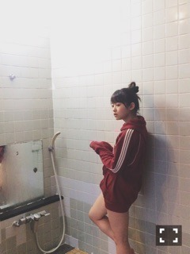

| 2016/01 17 Sun | 終点は。692回目 |
おはよう


握手会で思いましたが
BUBKAのグラビアが好評でしたな！
絶妙にもさくて私もお気に入りです。
撮影はいろんなテーマでやるけど、
生々しい日常感の雰囲気も良い！

我のカガリシリーズが増えました。
やはり最高です∠( 'ω')／
かっこよすぎて毎日眺めてます。
絶妙な錆びなんだなあ、金具も電線までも。
流石すなあ！！！！！！
綺麗なお花とか見てると
何かつまんね、と感じます。
良い意味で綺麗と
対照的なものを組み合わせると
好みになります。
最近は、いろいろ実行中です。
好きなものに囲まれて考えて考えて
生活することがいちばんの癒しヽ(ﾟ､｡)ﾉ
EX大衆発売中
みなみと対談で熱い私と
95年組対談に注目！！
お知らせ
「さぬき映画祭」にて上映される
映画「アニバーサリー」に出演します。
メディコム・トイ20周年記念に
つくられた映画になります。
5つのオムニバスストーリーの中の
「記念日が行方不明」
11thペアPV以来の高橋栄樹さん！
脚本は狗飼恭子さん！
このストーリーの主人公になれたこと、
また映像に関われたことが嬉しい。
とても素敵な作品！
2月21日（日）16:00
アルファあなぶきホール・小ホールで上映
香川県民の皆様
よろしくお願いします。
香川県にお住まいじゃない方も
観に来てくれたら尚喜びます。
そういえば、11thの生駒と私のペアPV
どこにも公開されることがないであろう
長編があること知ってましたか？
まりか
コメント(508)
2016/01/17 10:06